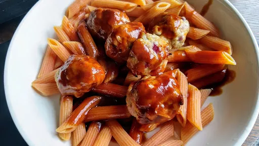

Pork and sweet potato meatballs
50 mins
Serves 4

Ingredients
- 455 g lean ground pork
- 1 small sweet potato
- ½ small red onion finely diced
- handful fresh coriander, finely chopped
- pinch salt, optional
- ¼ tsp ground ginger
- ¼ tsp onion powder
- ¼ tsp garlic powder
- olive oil
- 4 tbsp hoisin sauce
- 4 tbsp passata
- 2 tbsp water
Instructions
- Pierce the
sweet potato1 small
with a fork and add to the microwave and cook for 5 mins (test for softness, if still a little hard, add for another minute or so, allow to cool.
- Preheat oven to 200°C/Gas 6.
- Add the olive oil to a frying pan over a medium high heat.
- Add the red onion and fry till softened and caramelized.
- Remove and allow to cool slightly.
- When the
sweet potato1 small
is cooled down, cut in half and scoop out all the flesh and add to the ground pork455 g
.
- Add the onion and all other ingredient and mix well to all combined. You want the
sweet potato1 small
mashed into the pork with little small pieces.
- Form into equal sized meatballs and place on a baking tray lined with parchment paper.
- Place in the oven and bake for approx 15-20 mins (pork should be cooked through).
- Serve with your choice of sides, great with as they are or with sauce suggestions.
- For the sauce add the
hoisin sauce4 tbsp
, passata4 tbsp
and water2 tbsp
to a small saucepan and heat gently until thickened. Serve alongside the meatballs or drizzled over the top .
www.littlegrazers.com
Short Link
Long Link